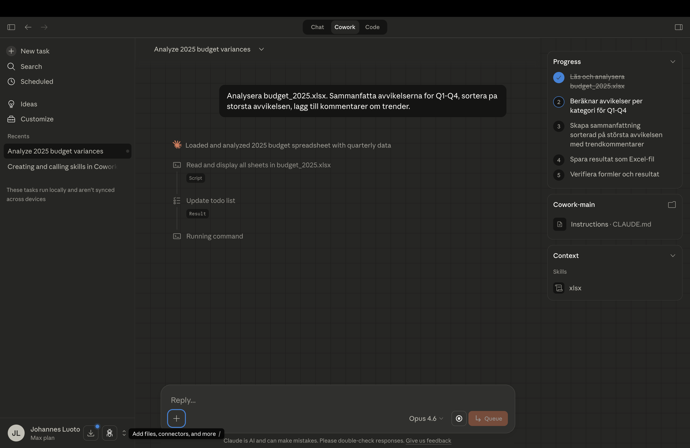

Rapport med context engineering
Skillnaden mellan en OK rapport och en bra rapport är inte verktyget — det är hur du beskriver uppgiften.
I första modulen fick du en tabell. Nu bygger vi en hel rapport — och lär oss varför kontext är nyckeln till kvalitet.
Beskriv vem du är
Innan du ger Claude en uppgift behöver du besvara en enkel fråga: vem är du, och vem ska läsa resultatet? Det gör du genom att skapa två kontextfiler som ligger i samma mapp som din data.
Båda filerna finns i övnings-ZIP:en från Modul 1. Öppna dem och anpassa till ditt företag — eller använd exemplen rakt av för att öva.
kontext.md
Du är analytiker på ett medelstort företag med 200 anställda.
Vår tonalitet är professionell men tillgänglig.
Målgruppen är ledningsgruppen — de vill ha slutsatser, inte rådata.
Vi värderar tydlighet och handlingsbara insikter.grafisk_profil.md
Primärfärg: #222D59 (mörkblå)
Sekundärfärg: #2FAA51 (grön för positiva tal)
Varningsfärg: #E63946 (röd för negativa avvikelser)
Typsnitt: Sans-serif (t.ex. Calibri eller Arial)
Rubriker: Korta, max 6 ord
Tabeller: Vit bakgrund, mörkblå headers, alternerande radfärger
Diagram: Använd primär- och sekundärfärg, alltid med legendVarför spelar det roll?
Samma data, samma verktyg — men väldig skillnad i output:
Generisk rapport
Intäkterna ökade med 12%. Kostnaderna ökade med 8%. Vinsten ökade med 4%. Här är en tabell med alla siffror...
Ingen struktur. Ingen prioritering. Ingen insikt om vad ledningen behöver veta.
Beslutsunderlag för LG
Tre avvikelser kräver beslut: Personalkostnader +340 TSEK, IT-investeringar -280 TSEK förra kvartalet, marknadsbudget underutnyttjad. Rekommendation: omallokera 150 TSEK från marknad till IT.
Rätt ton, rätt detaljer, rätt slutsatser för målgruppen.
Prompten som gör skillnad
Nu har du kontextfilerna. Här är prompten du skriver i Claude Desktop — notera hur du refererar till filerna, ger en tydlig uppgift, och bestämmer format:
Läs kontext.md och grafisk_profil.md.
Analysera kvartalsdata.xlsx — identifiera de tre största avvikelserna mot budget.
För varje avvikelse: förklara trolig orsak och implikation.
Skriv ett beslutsunderlag för ledningsgruppen.
Max 1 sida. Börja med slutsatserna.
Följ vår grafiska profil.Tryck Enter. Claude läser filerna, analyserar datan, och börjar skriva. Så här ser det ut:

Och här är resultatet — en rapport som följer din grafiska profil och är skriven för din målgrupp:
Kvartalsrapport Q4 2025
Beslutsunderlag — Ledningsgruppen
Sammanfattning
- Personalkostnader +340 TSEK över budget — drivet av oplanerade konsultinköp i november
- IT-investeringar -280 TSEK under budget — projektförseningar i CRM-migrering
- Marknadsbudget -190 TSEK underutnyttjad — kampanjstart fördröjd till Q1 2026
Avvikelser mot budget
| Kostnadspost | Budget (TSEK) | Utfall (TSEK) | Avvikelse |
|---|---|---|---|
| Personal | 4 200 | 4 540 | +340 (+8,1%) |
| IT & System | 1 800 | 1 520 | -280 (-15,6%) |
| Marknad | 950 | 760 | -190 (-20,0%) |
| Total | 6 950 | 6 820 | -130 (-1,9%) |
Implikationer
Personalkostnadsöverskridandet utgör huvudrisken. Om konsultberoendet inte åtgärdas i Q1 riskerar helårsutfallet en negativ avvikelse på ca 800 TSEK. Underutnyttjad marknads- och IT-budget kan omallokeras för att kompensera.
Gör det snyggt — automatiskt
Du har redan lagt din grafisk_profil.md som kontextfil. Men du kan gå längre: spara den i ditt Claude Desktop-projekt så laddas den automatiskt i varje konversation. Kombinera med en design-plugin från Marketplace, så får du professionellt formaterade rapporter utan att repetera designinstruktioner.
Så här fungerar det
Lägg grafisk_profil.md i ditt Claude Desktop-projekt. Claude laddar den automatiskt i varje konversation. Installera sedan en design-plugin från Marketplace för att få professionell export — PDF, bildbehandling, layouter. Du behöver aldrig repetera designinstruktionerna.
Tre iterationer till perfektion
Den första versionen är sällan perfekt — och det är okej. Styrkan med Claude Desktop är att du kan iterera snabbt. Här är tre uppföljningspromptar:
Sammanfattningen är för lång — max 100 ord.Lägg till ett diagram över intäkts- vs kostnadstrenden.Byt ordningen — börja med slutsatsen, inte bakgrunden.Varje iteration gör rapporten lite bättre — och tar sekunder:
Komplett men lång
Alla avvikelser identifierade. Sammanfattningen är 180 ord — för lång för ett LG-underlag.
Skarpare fokus
Sammanfattning under 100 ord. Diagram tillagt. Tydligare prioritering av avvikelser.
Redo för LG
Börjar med slutsatsen. Grafisk profil följd. Diagram, tabell, rekommendation — allt på en sida.
Checkpoint — Kvalitetschecklista
Innan du skickar rapporten vidare — kontrollera att allt stämmer:
Du gav Claude samma data i Modul 1 och Modul 2. Skillnaden? Kontext. Du berättade vem du är, vem målgruppen är, och vilken standard ni håller. Det är context engineering — och det är den färdighet som gör AI användbar på riktigt.
Redo för nästa steg?
I nästa modul automatiserar vi det här — så du aldrig behöver göra det manuellt igen.